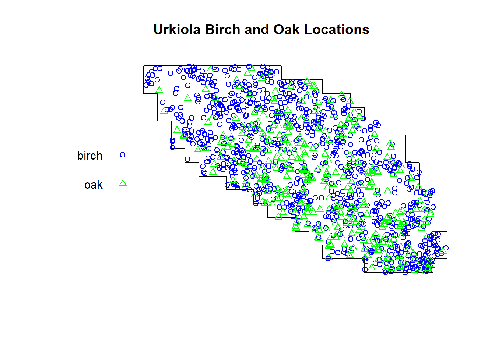
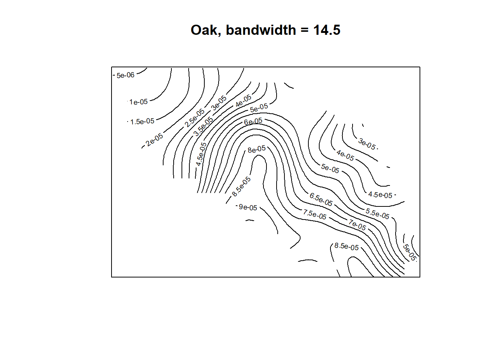
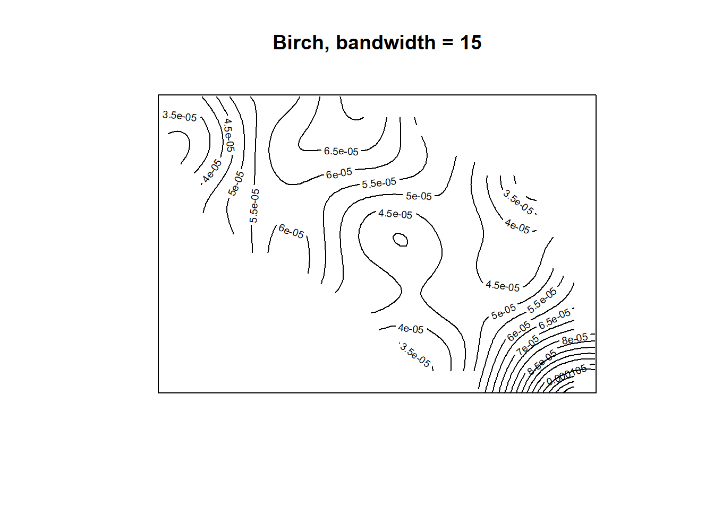
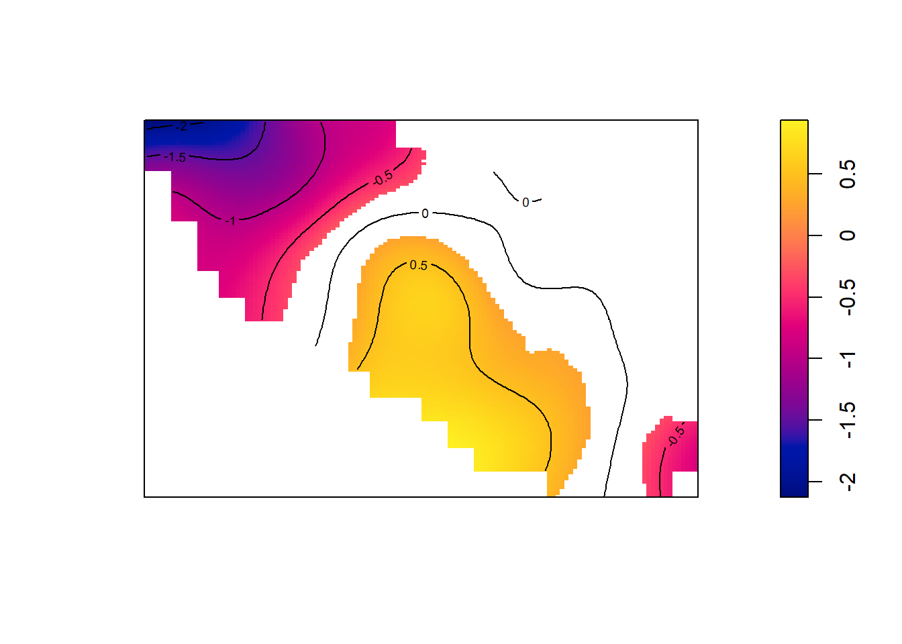
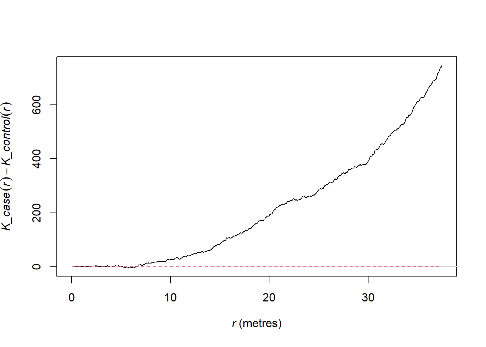
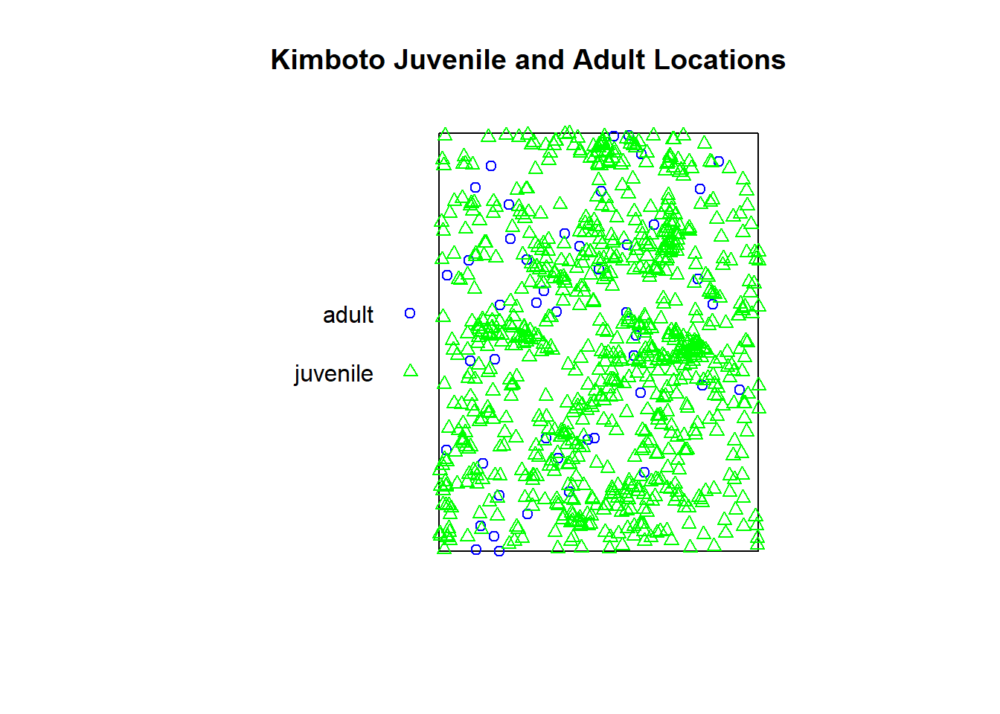
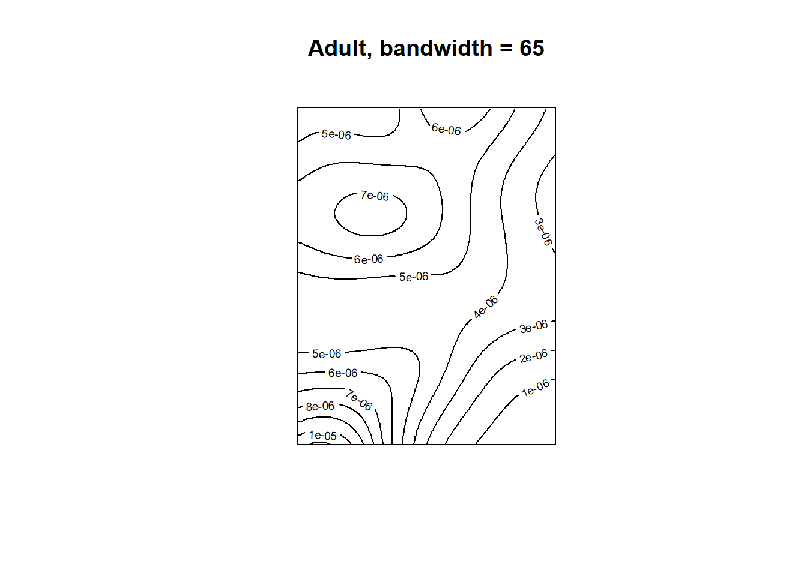
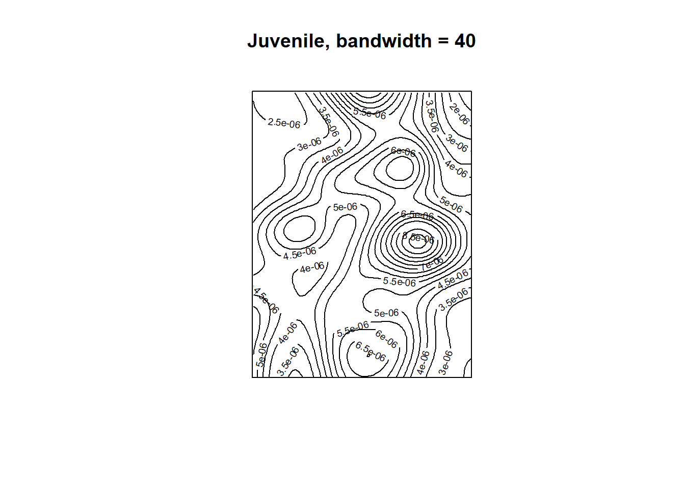
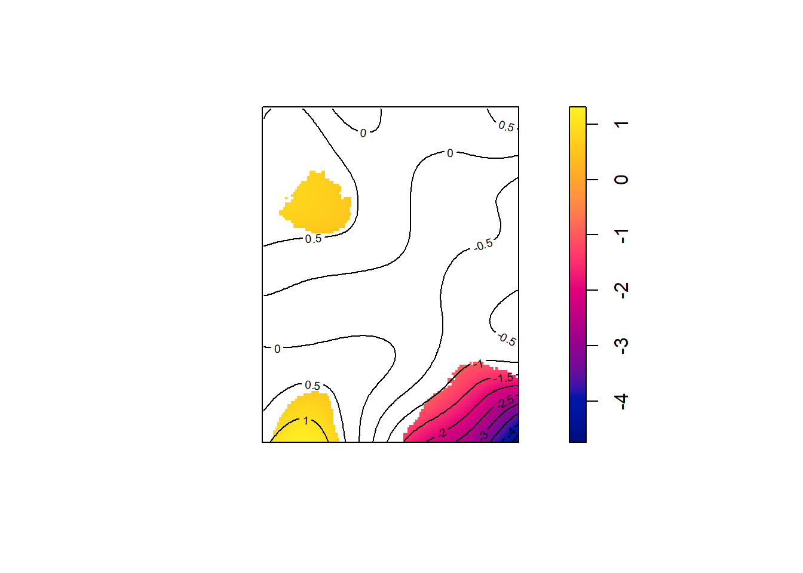
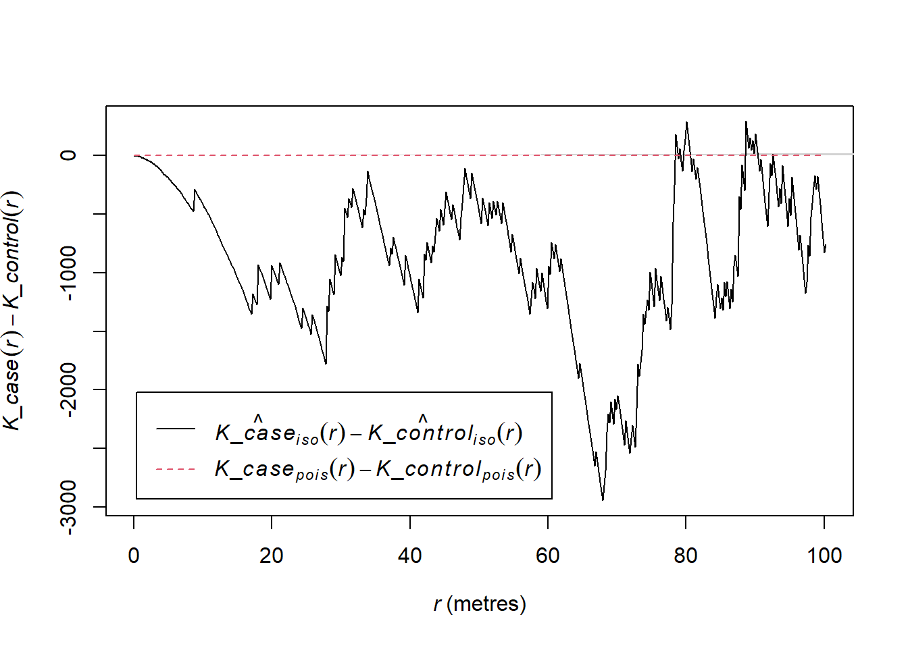

Case-Control Point Data Homework (First- and Second-Order Properties)
Instructions: Answer the following questions and write your answers in a word processor. Mathematical symbols should be written using the equation editor. Appropriate graphics should be included. The document may also be created in LaTeX, though this is NOT encouraged.
Problem 1
The urkiola data set in the spatstat package contains locations of birch (Betula celtiberica) and oak (Quercus robur) trees in a secondary wood in Urkiola Natural Park (Basque country, northern Spain). They are part of a more extensive dataset collected and analysed by Laskurain (2008). The coordinates of the trees are given in meters. Let the “oak” trees be the cases and “birch” trees be the controls.
a.
Create a plot of the of the point pattern that distinguishes between the two types of trees. Do you notice any evidence of clusters? Explain.
library(spatstat)
Loading required package: spatstat.data
Loading required package: spatstat.geom
spatstat.geom 3.2-5
Loading required package: spatstat.random
spatstat.random 3.1-6
Loading required package: spatstat.explore
Loading required package: nlme
spatstat.explore 3.2-3
Loading required package: spatstat.model
Loading required package: rpart
spatstat.model 3.2-6
Loading required package: spatstat.linnet
spatstat.linnet 3.1-1
spatstat 3.0-6
For an introduction to spatstat, type 'beginner'
library(ggplot2)urk <- spatstat.data::urkiolaplot(urk,cols=c('blue','green'),main ='Urkiola Birch and Oak Locations')

From the above plot we can see areas where more birch trees appear to be prominent relative to the oak trees but it is hard to say if the oak trees are clustering in a different manner than the birch locations. It does appear that there are fewer oak trees found in the upper left region while the oak trees do appear more plentiful in the inner regions.
b.
Create contour plots of the spatial density function for the oak and birch trees. Use a bandwidth of 14.5 for the oak trees and 15 for the birch trees. Do any differences jump out to you?
library(smacpod)oak <-which(urk$marks =='oak')birch <-which(urk$marks =='birch')oak_sp <-spdensity(urk[oak],sigma=14.5)birch_sp <-spdensity(urk[birch],sigma=15)# contour plot of oak with titlecontour(oak_sp, nlevels =15, main ="")title("Oak, bandwidth = 14.5")

# contour plot of birch, with titlecontour(birch_sp, nlevels =15, main ="")title("Birch, bandwidth = 15")

The contour plots show some differences between the oak and birch intensities. It appears that in both plots the intensities are flatter in some areas relative to other areas but these locations do not match between the oak and birch plots. This implies that the relative intensities between birch and oak tree locations are different.
c.
Estimate the log ratio of the spatial density of the oak trees relative to the birch trees (\(r(s)\)) using a bandwidth of 16. Create a contour plot of the log ratio. Which areas are most inconsistent with the belief that the spatial densities for the two types of trees are the same?
# log ratio of spatial densitiesr_oak =logrr(urk, case ="oak", sigma =16)
The region in the top left of the plot are inconsistent with the belief that the spatial densities are the same for both tree types.
d.
Construct pointwise 95% tolerance envelopes for \(r(s)\) using 499 data sets simulated under the random labeling hypothesis. Plot the regions above and below the tolerance envelopes in different colors. Overlay the contour plot of \(\tilde{r}(s)\). What can you conclude?
# construct 95% tolerance envelopes for log relative risklrr_oak =logrr(urk, sigma =16, case ='oak', nsim =499,level =0.95)
oak has been selected as the case group
plot(lrr_oak)

From the overlaid contour plot, we can see evidence of birch tree clustering relative to oak trees in the upper left region and far bottom right region. Alternatively, in the center we actually see evidence of the oak trees clustering relative to the birch tree locations.
e.
Perform a global test of clustering using \(\tilde{r}(s)\). Is there convincing evidence of clustering of one group relative to the other for at least one location in the study area?.
logrr.test(lrr_oak)
Kelsall and Diggle (1995) test for log relative risk
r(s) = ln[f(s)/g(s)]
f(s) = spatial density of cases at location s
g(s) = spatial density of controls at location s
case label: oak
control label: birch
null hypothesis: r(s) = 0 for all s in study area
alternative hypothesis: r(s) != 0 for at least one s in study area
test statistic: 7839.597
p-value: 0.002
nsim: 499
simulation procedure: random labeling
Yes, we can reject the null hypothesis that r(s) = 0 for all s at the alpha=0.05 level. This implies that there is evidence of clustering of the cases relative to the controls.
f.
Construct a plot for the difference in K functions between the oak trees and the birch trees. Also include min/max envelopes for this difference using 499 simulated data sets under the random labeling hypothesis. Also construct 95% pointwise tolerance envelopes. Also include the mean difference from the simulations. Provide a legend labeling these things. Are there any spatial scales for which the oak trees are more clustered than the birch trees in comparison to what we expect under the random labeling hypothesis (or vice versa)? If so, what scales?
### difference in K functions# estimate K function for birch and oak,# take their differencekd =kdest(urk, case ='oak')
oak has been selected as the case group
# plot estimated and theoretical KD (under RLH)plot(kd, cbind(iso, theo) ~ r, legend =FALSE, main ="")

# construct envelopes using 499 randomly labeled data setskdenv =kdest(urk, case ="oak", nsim =499,level =0.95)
It appears that beyond around r=15 meters spatial scale, the oak trees show evidence of clustering relative to the birch trees. To confirm, we can look at the summary function for the kdest object.
summary(kdenv)
KD(r) > upper envelope limit for the following r:
0.7319336
13.68716 to 13.83354
13.97993 to 37.475
From the summary results we can see that there is evidence of clustering of the oak trees relative to the controls for the spatial distance ranges specified.
g.
Perform a global test for clustering of the oak trees relative to the birch trees using the \(KD_+\) statistic. Interpret the results.
kdplus.test(kdenv)
Diggle and Chetwynd (1991) test for difference in K functions
KD(r) = K_case(r) - K_control(r)
case label: oak
control label: birch
null hypothesis: KD(r) = 0 for all r between 0 and 37.475
alternative hypothesis: KD(r) > 0 for at least one r between 0 and 37.475
test statistic: 1567.397
p-value: 0.004
nsim: 499
simulation procedure: random labeling
The global test p-value allows us to conclude that there is evidence of clustering in the cases relative to the controls for at least 1 value of r between 0 and 37.475. This outcome is in line with our plot showing the 95% confidence bands.
Problem 2
The paracou data set in the spatstat package contains data for Kimboto trees observed in Paracou, French Guiana. Let the juveniles be the controls and adults be the cases. Use a bandwidth of 40 when estimating the densities of the juveniles and 65 for the adults. Use a bandwidth of 52.5 when estimating the log ratio of spatial densities.
a.
Create a plot of the of the point pattern that distinguishes between the two types of trees. Do you notice any evidence of clusters? Explain.
kimboto <- spatstat.data::paracouplot(kimboto,cols=c('blue','green'),main ='Kimboto Juvenile and Adult Locations')

At a glance, there appears to be significantly more clustering in the juvenile kimboto locations relative to the adult locations.
b.
Create contour plots of the spatial density function for the adult and juvenile trees. Use a bandwidth of 65 for the adult trees and 40 for the juvenile trees. Do any differences jump out to you?
adult <-which(kimboto$marks =='adult')juvenile <-which(kimboto$marks =='juvenile')adult_sp <-spdensity(kimboto[adult],sigma=65)juv_sp <-spdensity(kimboto[juvenile],sigma=40)# contour plot of adult kimbotos with titlecontour(adult_sp, nlevels =15, main ="")title("Adult, bandwidth = 65")

# contour plot of juveniles, with titlecontour(juv_sp, nlevels =15, main ="")title("Juvenile, bandwidth = 40")

The Juvenile Kimboto relative intensities appear to vary much more than the adult kimbotos and do not seem to match up to the adult contours.
c.
Estimate the log ratio of the spatial density of the adult trees relative to the juvenile trees (\(r(s)\)) using a bandwidth of 52.5. Create a contour plot of the log ratio. Which areas are most inconsistent with the belief that the spatial densities for the two types of trees are the same?
# log ratio of spatial densitiesr_adult =logrr(kimboto, case ="adult", sigma =52.5)
The region least consistent with the belief that the two types of trees have the same spatial densities are in the bottom right and bottom left of the plot.
d.
Construct pointwise 95% tolerance envelopes for \(r(s)\) using 499 data sets simulated under the random labeling hypothesis. Plot the regions above and below the tolerance envelopes in different colors. Overlay the contour plot of \(\tilde{r}(s)\)). What can you conclude?
# construct 95% tolerance envelopes for log relative risklrr_adult =logrr(kimboto, sigma =52.5, case ='adult', nsim =499,level =0.95)
adult has been selected as the case group
plot(lrr_adult)

From the overlaid spatial densities we can see evidence of the control juvenile trees clustering relative to the case ‘adult’ trees in the bottom right area, whereas in the top and bottom left areas marked in yellow we see evidence of clustering for the case ‘adult’ trees relative to the control ‘juvenile’ trees.
e.
Perform a global test of clustering using \(\tilde{r}(s)\)). Is there convincing evidence of clustering of one group relative to the other for at least one location in the study area?.
logrr.test(lrr_adult)
Kelsall and Diggle (1995) test for log relative risk
r(s) = ln[f(s)/g(s)]
f(s) = spatial density of cases at location s
g(s) = spatial density of controls at location s
case label: adult
control label: juvenile
null hypothesis: r(s) = 0 for all s in study area
alternative hypothesis: r(s) != 0 for at least one s in study area
test statistic: 125222.1
p-value: 0.036
nsim: 499
simulation procedure: random labeling
At the alpha=.05 level, we can reject the null hypthesis that the spatial densities of the two types of trees are the same. This is in line our observed spatial density overlaid contour plot.
f.
Construct a plot for the difference in K functions between the adult trees and the juvenile trees. Also include min/max envelopes for this difference using 499 simulated data sets under the random labeling hypothesis. Also construct 95% pointwise tolerance envelopes. Also include the mean difference from the simulations. Provide a legend labeling these things. Are there any spatial scales for which the adult trees are more clustered than the juvenile trees in comparison to what we expect under the random labeling hypothesis (or vice versa)? If so, what scales?
### difference in K functions# estimate K function for adult and juvenile,# take their differencekd =kdest(kimboto, case ='adult')
adult has been selected as the case group
# plot estimated and theoretical KD (under RLH)plot(kd, cbind(iso, theo) ~ r, legend =TRUE, main ="")

# construct envelopes using 499 randomly labeled data setskdenv =kdest(kimboto, case ="adult", nsim =499,level =0.95)
It appears that for many spatial densities between 0 and 25 we see evidence of clustering of the control juvenile trees relative to the adult case trees. To confirm which values exactly, we can use the summary function for the kdest object.
summary(kdenv)
KD(r) < lower envelope limit for the following r:
1.565847 to 8.612158
11.35239 to 17.81151
19.76882
24.27063
27.20659 to 27.79378
g.
Perform a global test for clustering of the adult trees relative to the juvenile trees using the \(KD_+\) statistic. Interpret the results.
kdplus.test(kdenv)
Diggle and Chetwynd (1991) test for difference in K functions
KD(r) = K_case(r) - K_control(r)
case label: adult
control label: juvenile
null hypothesis: KD(r) = 0 for all r between 0 and 100.2142
alternative hypothesis: KD(r) > 0 for at least one r between 0 and 100.2142
test statistic: -337.9593
p-value: 0.824
nsim: 499
simulation procedure: random labeling
The high p-value does not allow us to reject the null hypothesis, however since the alternative hypothesis is one sided for KD(r) > 0 this test does not check for clustering of the controls relative to the cases. Were we to swap the ‘case’ and ‘control’ labels of the kimboto trees then we might expect to see a smaller p-value, given the plot of the kdest object.
Problem 3
Let \(\lambda_0(s)\) denote a control intensity function and \(\lambda_1(s)\) denote a case intensity function defined over a study area \(D\). Assume that \(\lambda_1(s)=c\lambda_0(s)\) for all \(s\in D\). Show that in this case, \(r(s)=0\) for all \(s\in D\).
Problem 4
Let \(\lambda_0(s)\) denote a control intensity function and \(\lambda_1(s)\) denote a case intensity function defined over a study area \(D\). Assume that \(\lambda_1(s)=c\lambda_0(s)\) for all \(s\in D\).. Show that \(f(s)=g(s)\) for all \(s\in D\), where \(f\) and \(g\) are the spatial densities of the cases and controls, respectively.